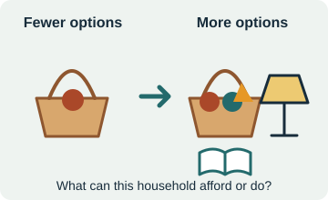
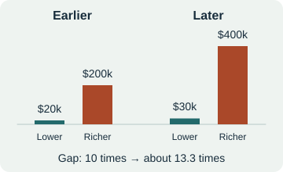

Choose a unique username with at least two letters followed by at least two numbers, such as RIVER27 or OTTER204. Do not use your real name or your school student ID. Write your username down: use exactly the same one whenever you return, including on another device.
01 / THE BIG INQUIRY · 0–12 MIN
More possibilities. For whom?
Industrial Transformation
How did industrial technology expand what people could do? What benefits and harms did it help create, who experienced them, and how did people respond?
I can explain what the Industrial Revolution was, how it expanded human possibilities, and investigate what determined who benefited.
What changed?
The Industrial Revolution was a long transformation in how people produced goods: machines, new energy sources, and factories reorganized work. It began in Britain in the eighteenth century and spread unevenly. In this lesson, we focus on the United States, especially 1865–1920.
Machines increased what workers could produce. Steam engines made coal a source of mechanical power. Factory owners organized workers and machines in one production system. These changes expanded capability and created new conflicts over work, wealth, and the environment.
Quick partner check
One partner explains how a machine changes production; the other explains why the way work is organized matters. Then switch.
WATCH WITH YOUR CLASS · ABOUT 5 MIN
How inventions change history
The cotton gin is an earlier example, patented in 1794 after its development in 1793. It separated seeds from cotton; it did not pick cotton. Greater processing capacity increased demand for cotton and helped expand slavery. Watch for the connection between an invention and the institutions around it.
Video: Kenneth C. Davis / TED-Ed. Your teacher will play it.
02 / LOOK AT THE SCALE · 12–17 MIN
A long past. A compressed transformation.
Use the timeline to locate the change. Equal horizontal distances represent equal amounts of time. The shaded interval is our U.S. focus.
This is a timeline, not a graph of living standards. An empty early interval does not mean nothing changed. The data below begin when the selected sources provide usable observations.
Predict, then discuss
Which would change your daily possibilities most: more goods, better chances of survival, or cheaper light? Choose one and defend it to your partner. You can revise your thinking after the evidence.
03 / THREE ANCHOR INVESTIGATIONS · 17–37 MIN
What became possible?
For each investigation: identify a pattern, use a number, and ask what the measure leaves out. A trend shows a change; it does not by itself prove its cause.
A
PRODUCTION
More output per person
GDP per capita divides the value of economic production by population. It is an average, not a worker's pay. The values here use purchasing power adjustments and 2011 international dollars.
Selected historical estimates, Maddison Project Database 2023. The early comparison is England (through 1700), then Britain/UK; coverage changes. Straight segments connect benchmarks, not observations for every intervening year. These are not world averages.
Read the benchmark values
B
SURVIVAL
More chances to live
Life expectancy at birth summarizes survival under a year's death rates. High infant mortality pulled the average down; a value of 47 years does not mean most adults died at 47.
Year 1: best guesses, not measured statistics. We use about 20 years of life expectancy and about 400 infant deaths per 1,000 births as an illustrative ancient reference from one Roman-era reconstruction (Langner, 1998). Its evidence comes from later Roman centuries; other reconstructions differ. These are not precise year-1 or world averages. The dashed bridge connects different populations for comparison; it does not show what happened in every intervening century. Solid lines show selected U.S. benchmarks: life expectancy 47.3 in 1900 to 76.8 in 2000; infant deaths about 100 to 6.89 per 1,000 births. Early registration coverage and estimation differ from later national statistics. The 1950–1990 infant rates use mortality/natality files; the 2000 value uses linked birth–infant death records. Sources: Langner; CDC/NCHS.
Imagine 1,000 births. The early estimate means about 100 infant deaths; the later rate means about 7. This comparison describes populations, not the fate of any particular child. Notice the recent rise in life expectancy and the downward bend in infant mortality. Sanitation, nutrition, public health, and medicine all helped; industrial technology alone does not explain the changes.
C
EVERYDAY CAPABILITY
The cost of keeping the light on
Compare the labor time needed to pay the operating cost of the same light service: 1,000 lumen-hours. Think of a light producing 1,000 lumens for one hour.
Nordhaus, Table 1.6, pp. 52–53. Selected U.S. technologies, fuel/energy operating cost only; equipment and installation excluded. Wage measures change across dates. The final observation is 1992, not 2000. Lower cost does not demonstrate that every household had access.
Beyond the three anchors
Open the supporting reveals with your class. They add dimensions to the story, but measure different things and cover different dates.
04 / WHO BENEFITS? · 37–44 MIN
A bigger economy can still leave a wider gap.
Absolute well-being

What can a person afford or do?
Food, lighting, travel, and health may improve even if the gap with richer people grows.
Relative position

How does income compare with others? Illustration: k means thousand dollars.
A larger gap can exist alongside improvements in both groups' lives. See the made-up example below.
Security and participation
Can people keep opportunities and have a say?
Can a person keep their job, obtain care, attend school, and influence decisions? More goods do not automatically create these protections.
Try the logic—with dollars
This is a made-up example, not historical wages. Compare annual household income. Assume prices, household size, and needs stay the same.
Household
Earlier income
Later income
Increase
Lower income
$20,000
$30,000
$10,000 = 50%
Richer
$200,000
$400,000
$200,000 = 100%
Absolute change: the lower-income household has $10,000 more per year. With prices held constant, that can buy more. A 50% increase means adding half of the starting $20,000: $10,000.
Relative change: the richer household first earns 10 times as much ($200,000 ÷ $20,000). Later it earns about 13.3 times as much ($400,000 ÷ $30,000). Both incomes rise, while the gap widens.
Historical global estimates put the average income of the top 10% at about 18 times that of the bottom 50% in 1820, and about 41 times in 1910. These are global reconstructions, not a U.S. series. A ratio alone cannot tell us whether the bottom half's absolute income rose or fell. Source: World Inequality Report 2022, Figure 2.2.
Turn percentages and ratios into people and dollars
Percentage of people: in a group of 100, the top 10% means the 10 people with the highest incomes; the bottom 50% means the 50 with the lowest incomes. These labels do not say what percentage of all income those people receive.
Income share: in a made-up community with $1,000,000 of total annual income, a group receiving 60% receives $600,000 altogether; a group receiving 7% receives $70,000 altogether. These are group totals, not each person's income.
Average-income ratio: if one group's average annual income were $10,000 and another's were $410,000, the second would be 41 times the first. These dollar amounts illustrate the math; they are not estimates of 1910 incomes.
Compare possibilities, then ask about access.
Three housing examples—not a ranking of people's worth, happiness, or communities. The photos show different places and dates and are not to the same physical scale. An exterior cannot tell us a family's income, utilities, or daily experience.
DOCUMENTED HOME / OCCUPIED BY 1899
A wealthy household
Frederick and Louise Vanderbilt's mansion, Hyde Park, New York. Modern photograph: National Park Service (NPS photo).
The Hyde Park mansion had electricity, hot and cold running water, and flush toilets. These conveniences existed, but this exceptional household cannot represent most Americans.
Homes of cotton-mill workers, Lydia Mills, Clinton, South Carolina, December 2, 1908. Lewis W. Hine / Library of Congress, nclc.01477; no known publication restrictions.
This documented mill-community example helps us imagine a teenager's home. It is not our fictional interview character's actual home in Vermont, or a picture of every mill family. Choices depended on wages, work demands, school access, and local services.
Apartments are homes for people across income levels. This public-housing example illustrates one option; lower-income households also live in many other kinds of homes.
For our fictional comparison, imagine a household with electricity, school access, and an internet-connected phone, but rent pressure or insecure work. The photo does not establish these facts about its residents.
05 / GALLERY WALK · 44–61 MIN
Find the mechanisms.
The charts show outcomes. Now investigate evidence on the wall to explain how change happened and who experienced its benefits and costs.
Start at the station your teacher assigns. Move when directed; visit all six.
At each station, read the wall card and examine its evidence. Record one specific observation and a question or possible implication.
Return to your seat. Choose two stations that help explain one outcome from the charts.
Tell your partner how the evidence supports your explanation. Your partner asks, “What evidence would make you reconsider?” Revise or qualify your claim.
Wall-card evidence is available at the stations. These fields are your observation record.
06 / RETRIEVAL CHECK · 61–65 MIN
Match the language to the idea.
Try from memory first. Match each term to a definition. After checking, revisit terms you missed and try again. The check records your first score and your latest score.
07 / SAVE & SUBMIT · 65–68 MIN
Finish this part before the interview.
Check that every response field and vocabulary match is filled.
Click Save now and wait for “Saved to spreadsheet.” If saving fails, keep this tab open and tell your teacher.
Download your PDF. Open it and check your username, completion status, and responses.
Submit the PDF to the Google Classroom assignment your teacher identifies.
Then open the separate Boost interview-and-reflection document. Your teacher will introduce the interview and model a follow-up question.